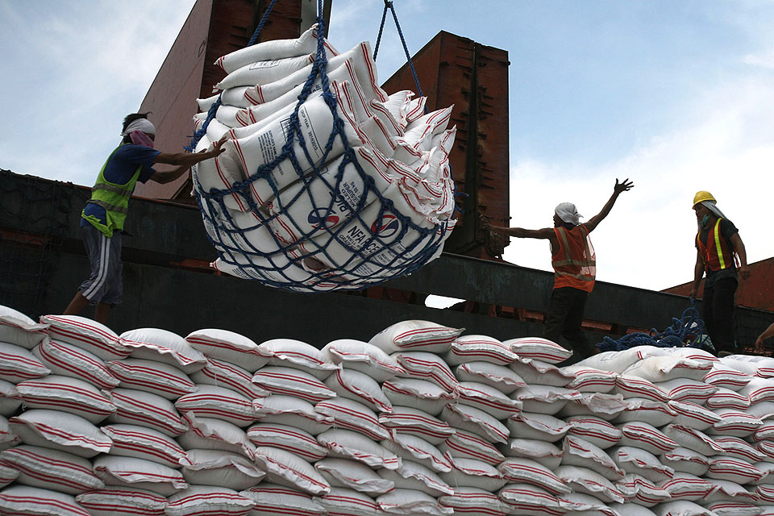
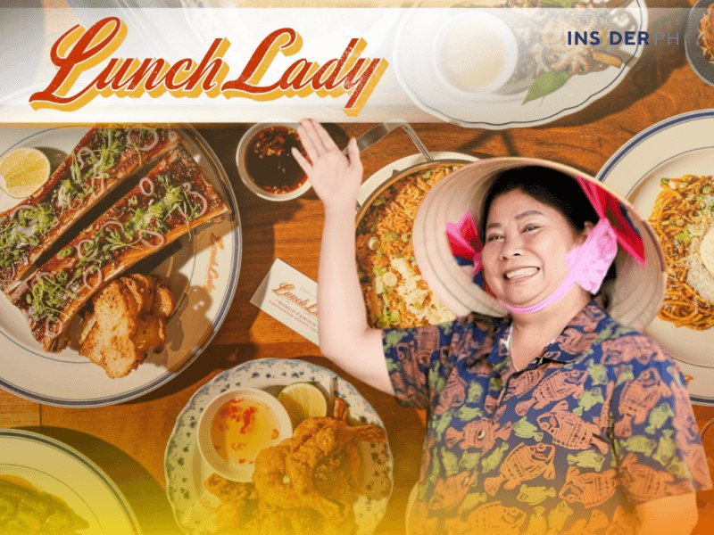

DA: farm-goods prices likely up as the peso hits a record low
29 Oct 2026
GMA News reports the Department of Agriculture expects imported items, rice and fertilizer first, to cost more as the peso sank to an intraday ₱64.18:$1 on Wednesday, past Tuesday’s record close of ₱64.17. Spokesperson Arnel de Mesa said rice prices may rise in November and December despite incoming volumes, citing El Niño. As of Oct 22, 4.36 million metric tons of imported rice had arrived, and DA says key-food inventory, imported and local, covers the rest of 2026. The peso’s slide is tied to crude spiking on the Middle East crisis.
Operator read: “enough supply” and “higher price” are both true here. The cost driver is the exchange rate and fuel, not shortage, so don’t wait for empty shelves to act. Rice is your plate-cost floor: price a December rice buy now, and check imported inputs (cooking oil, flour, dairy, frozen fries) since they ride the same peso. If you’re planning holiday menu prices, build in the move now rather than repricing mid-December.
Open GMA News

Vietnam’s Michelin-recognized The Lunch Lady opens in BGC
15 Oct 2026 · opened 29 Oct
Insider PH reports The Lunch Lady, which started as Nguyễn Thị Thành’s Saigon noodle-soup stall in 1995 and was featured by Anthony Bourdain in 2009, opened its first Philippine location on Oct 29 at 102 Forbestown Road, BGC. The brand holds five straight Bib Gourmands in Vancouver (2022–2026) and one in Toronto (2026). The local partner is HTCG Premium Food Concepts Inc., led by Annabelle Chua. Lunch runs rotating Vietnamese noodle soups; dinner shifts to contemporary Southeast Asian plates (Wagyu Phở, Steak Lúc Lắc, Garlic Noodles) with charcoal cooking and craft cocktails.
Operator read: another charcoal-led import into BGC after Torikizoku and Kiwami’s RŌEN this month. Charcoal and grill talent are getting crowded in the south Metro. The format lesson is the split day-part: a cheap, fast noodle lunch for office traffic and a higher-ticket dinner with drinks. That doubles the use of one lease without a second kitchen.
Open Insider PH